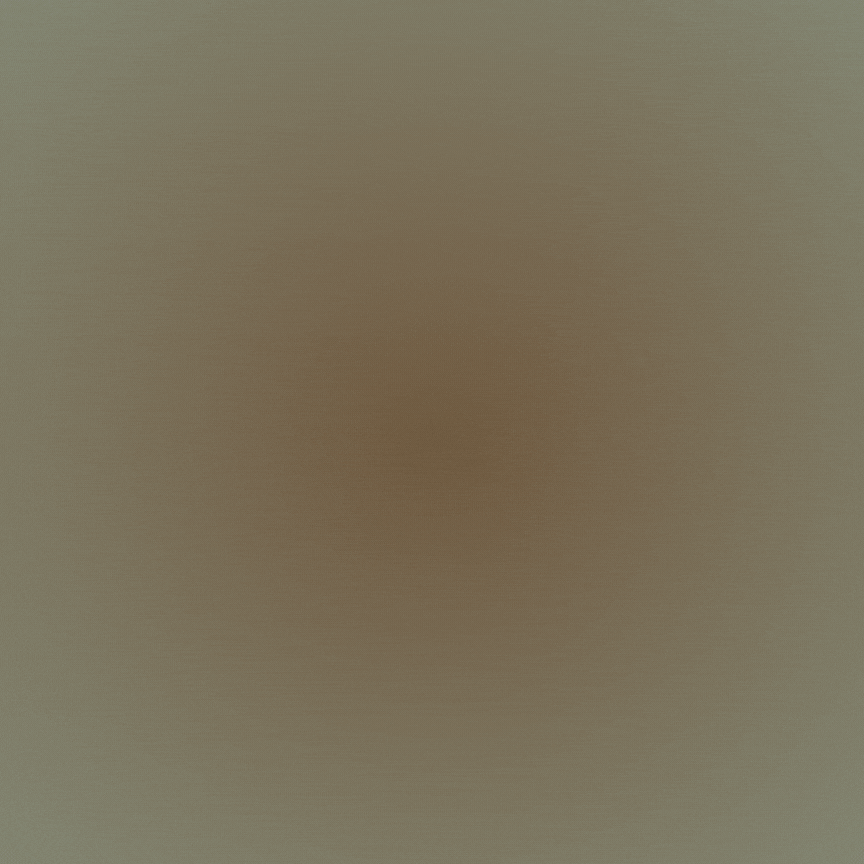

Batu Kapur (limestone)
Proses Pembentukan Batu Kapur
Pengendapan didalam air laut, ini dikarenakan adanya unsur mineral kalsit yang berupa fosil dari kerangka binatang seperti kerang maupun binatang lain yang hidup diperairan laut. Setelah proses tersebut terjadi selama ratusan hingga ribuan tahun dengan terus adanya penumpukan atau penimbunan yang dihasilkan dari fosil kerangka dari binatang. Dalam pembentukan batu kapur, air hujan akan menimbulkan reaksi terhadap penumpukan kerangka tersebut yang mana air hujan ini membantu serta mempercepat proses terbentuknya batu kapur (limestone).
Mineral dalam batu kapur
1. Kalsit
2. Endapatan Travertine
3. Stalagnit
4. Stalagsit (CaCO3)
Mineral karbonat umum ditemukan berasosiasi dengan batu kapur
adalah aragonite (CaCO3), merupakan mineral metastable karena pada
kurun waktu tertentu dapat berubah menjadi kalsit. Mineral lainnya
yang umum ditemukan tetapi dalam jumlah kecil adalah Siderit
(FeCO3), ankarerit (Ca2MgFe(CO3)4), dan magnesit (MgCO3).
Jenis dan Variasi Batu Kapur
Variasi : Bahan
pengotor ini menyebabkan variasi warna pada batu kapur, yang dapat
berupa putih, abu-abu muda, abu-abu tua, coklat, merah, hingga
hitam.
Jenis : Batu
gamping/kapur dengan kandungan beberapa butir ( <10 ) di dalam
matriks lumpur karbonat disebut mudstone dan bila mudstone
tersebut mengandung butiran yang tidak saling bersinggungan
disebut wackestone. Lain halnya apabila antar butirannya saling
bersinggungan disebut packstone atau grainstone.
Penyebaran Batu Kapur
Penyebaran batu kapur terbanyak tersebar di daerah pulau Jawa,
seperti
1. Kediri
2. Surabaya
3. Surakarta
4. Klaten
5. Wonogiri
6. Kedu
7. Yogyakarta
8. Priangan
Pemanfataan Batu Kapur
1. Perekat (Semen, Bahan Mortar, Plesteran )
2. Hidrolisis (Industri Sabun)
3. Bahan absorbsi (Bahan Pemutih)
4. Pelarut (Cat Casein)
5. Bahan dehidrasi (Pengering Udara)
6. Flokulan (Gula)
7. Fluk (Pembuatan keramik)
Batu Flint (Rijang)

Rijang (SiO2) adalah batuan endapan silikat kriptokristalin dengan permukaan yang licin (glassy). Rijang biasanya sering di sebut sebagai batu api oleh orang awam. Disebut "batu api" karena jika diadu dengan baja atau batu lain akan memercikkan bunga api yang dapat membakar bahan kering.
Proses Geologi
Batu flint atau rijang terbentuk dari proses diagenesis yang terjadi pada sedimen dengan kandungan silika tinggi, biasanya berasal dari sisa-sisa makhluk laut seperti diatom dan radiolaria. Dalam proses ini, silika terendapkan dalam bentuk nodul atau lapisan, lalu mengkristal menjadi batu yang padat.
Jenis Batuan Rijang
Rijang, atau batu api, merupakan batuan sedimen silikat
kriptokristalin yang memiliki variasi warna seperti kelabu tua,
biru, hitam, coklat tua, dan merah (jasper).
Sifat Fisik :
Sifat fisik rijang (SiO2) berwarna merah hati, kelabu tua, biru,
hitam, coklat tua. Belahan/pecahan tidak sempurna/choncoidal,
kekerasan 6,5-8 skala mohs, sistem kristal hexagonal, berat jenis
2,6 gr/cm3, kemagnetan diamagnetit dan tidak transparan.
Pemanfaatan Batu Rijang :
Batu rijang dapat digunakan dengan membentuknya menjadi pisau,
anak panah, dan kepala kapak. Selain itu batu rijang khususnya
jenis jasper merupakan batu mulia yang dapat dibentuk menjadi
ornamen perhiasan. Batu rijang juga dapat dibenturkan/digesek
untuk menghasilkan api.
Persebaran Batu Flint (Rijang)
Rijang banyak tersebar di Indonesia, diantaranya :
1. Daerah Istimewa Aceh
2. Jawa Barat
3. Jawa Tengah
4. Jawa Timur
5. Kalimantan Barat
6. Kalimantan Selatan
7. Sulawesi Selatan
8. Nusa TenggaraTimur (NTT)
Batu Serpentinite (Granit)
Proses Pembentukan
Serpentinisasi adalah proses geologi metamorfik suhu rendah yang melibatkan panas dan air di mana batuan ultramafik dan mafik dengan kandungan silika yang rendah teroksidasi (oksidasi anaerobik dari Fe2 + oleh proton-proton air yang mengarah ke pembentukan H2) dan dihidrolisis dengan air menjadi serpentinit. Peridotit, termasuk dunit, yang berada didekat dasar laut dan disabuk pegunungan diubah menjadi serpentin, brusit, magnetit, dan mineral lainnya - beberapa mineral langka seperti awaruit (Ni3Fe), dan bahkan besi murni. Dalam proses tersebut sejumlah besar air diserap ke dalam batuan sehingga meningkatkan volume dan menghancurkan struktur.
Mineral pada Batuan
Interaksi antara air laut dan batuan ultrabasa mengubah mineral silikat primer, seperti olivin dan piroksen, menjadi mineral serpentin. Mineral serpentin terdiri dari tiga polimorf utama: lizardit, antigorite, dan chrysotile, yang secara optik sulit dibedakan satu sama lain di bawah mikroskop.
Pemanfaatan Batuan Serpentinite
1. Batu hias, dipoles untuk meningkatkan keindahan alamnya.
2. Produksi Asbes, karena tahan panas dan tahan lama.
Persebaran Batu Serpentinite
Serpentinite tersebar di banyak tempat di seluruh dunia seperti Kaledonia Baru, Zimbabwe, Amerika Utara Bagian Barat, Brasil Tengah, Timur Tengah dan Selatan Asia Timur. Tanah tropis Asia Timur memiliki sejumlah besar badan serpentinit termasuk singkapan Semenanjung dan Sabah di Malaysia
Batu Basalt
Proses Pembentukan
Basalt adalah jenis batuan beku vulkanik yang terbentuk melalui proses yang dimulai ketika magma yang berasal dari mantel bumi naik ke permukaan melalui retakan atau celah kerak bumi. Basalt terbentuk pada suhu tinggi sektar 1.100 hingga 1.200 derajat Celcius. Batuannya memiliki ciri-ciri khas, seperti warna gelap yang berkisar antara abu-abu tua hingga hitam, serta tekstur halus yang dihasilkan oleh proses pendinginan yang cepat.
Komposisi Mineral
a. Plagioklas
b. Piroksen
c. Olivine
d. Magnetit
Pemanfaatan Batu Basalt
1. Industri Kontruksi, sebagai bahan bangunan.
2. Bahan baku pembuatan kerajinan, seperti patung, vas dan
ornament.
3. Industri peralatan olahraga, seperti papan seluncur salju dan
skateboard.
4. Bahan pengisi filter air.
Persebaran Batu Basalt
Basalt banyak ditemukan di berbagai tempat di dunia terutama di daerah-daerah yang memiliki aktivitas Vulkanik seperti wilayah Indonesia, Islandia, dan Hawai. Pembentukan basalt terjadi saat lava basa yang kaya akan magnesium dan besi mengalir keluar dari perut bumi, mendingin dan mengeras di permukaan.
Batu Kuarsa

Mineral kuarsa adalah mineral yang terbentuk dari senyawa kimia yang terdiri dari satu bagian silikon dan dua bagian oksigen. Klasifikasi kimia kuarsa adalah silikat. Komposisi kimia kuarsa adalah SiO2. Kuarsa adalah mineral yang paling melimpah di kerak bumi. Kuarsa sangat tahan terhadap pelapukan baik pelapukan fisik maupun pelapukan kimia.
Proses Pembentukan Kuarsa
Kuarsa terbentuk melalui berbagai Proses geologi yang melibatkan kristalisasi, sedimentasi, dan metamorfisme. Pada tahap awal, kuarsa sering kali dihasilkan dari pendinginan magma yang kaya akan silika. Ketika magma tersebut mendingin perlahan di dalam kerak bumi, silika yang terkandung di dalamnya mengkristal menjadi kuarsa. Mineral ini biasanya muncul sebagai bagian dari batuan beku seperti granit atau riolit. Selain itu, kuarsa juga dapat terbentuk dari cairan hidrotermal yang mengandung silika. Ketika cairan ini mendingin atau mengalami perubahan tekanan, silika mengendap dan membentuk kristal kuarsa.
Variasi Kuarsa
Varietas kuarsa populer yang banyak digunakan sebagai permata meliputi : amethyst, citrine, rose quartz, smoky quartz, dan aventurine. Agate dan jasper juga merupakan varietas kuarsa dengan struktur mikrokristalin.
Pemanfaatan Batu Kuarsa
Kuarsa adalah salah satu mineral yang banyak memiliki kegunaan
(nilai penting). Batu ini memiliki sifat listrik dan tahan panas
yang membuatnya berharga dalam produk elektronik. Kilau, warna,
dan diaphaneity membuatnya berguna sebagai batu permata dan juga
dalam pembuatan kaca.
1. Pembuatan Kaca
2. Sebagai Pasir Pengecoran
3. Pasir kuarsa di Industri Perminyakan
4. Koleksi mineral
5. Untuk Kristal Kuarsa Sintetis
6. Kuarsa sebagai Batu Permata
9. Sebagai bahan bangunan
Kuarsa dapat ditemukan di seluruh bagian dunia. Kuarsa dapat
terbentuk pada semua suhu/temperatur. Batuan Kuarsa atau pasir
kuarsa tersebar di berbagai wilayah di Indonesia di antaranya:
1. Pulau Kalimantan
2. Bangka Belitung
3. Sumatera Barat
4. Kepulauan Riau
5. Pulau Jawa.
Batu Tufa Travertine

Travertin merupakan bagian dari batuan sedimen karbonat terestrial atau darat yang dibentuk oleh pengendapan atau prespitasi mineral karbonat dari larutan dalam tanah dan permukaan air, dan atau secara pemanasan dari mataair panas (Pentecost, 2005). Eisenstuck (1949) dalam Scholle, dkk, (1983) mengklasifikasikan travertin berdasarkan derajat hubungan antar material yang dikandung oleh travertin tersebut.
Proses Geologi
Travertin merupakan endapan karbonat yang terendapkan secara kimiawi terbentuk di sekitar rembesan/mata air, dan sepanjang sungai kecil serta terkadang di danau terdiri dari kalsit atau aragonit yang terbentuk pada lingkungan zona vados atau freatik yang pada umumnya dangkal. travertine dihasilkan dari proses pengendapan kalsium karbonat yang dapat ditemukan di mulut sumber air panas atau di gua kapur. Travertin merupakan bagian dari batuan sedimen karbonat terestrial atau darat yang dibentuk oleh pengendapan atau prespitasi mineral karbonat dari larutan dalam tanah dan permukaan air, dan atau secara pemanasan dari mataair panas.
Variasi dan Jenis Batu Tufa Travertine
Tufa Kalsium karbonat, Tufa silika, Tufa Vulkanik (tuf), Travertine Laminasi, Travertine Porous, dan Crystalline Travertine.
Pemanfaatan Batu Tufa Travertine
1. Pelapis Lantai dan Dinding
2. Fasad Bangunan
3. Area Outdoor
4. Elemen Dekoratif
5. Bangunan Bersejarah
Persebaran Batu Tufa Travertine
Batu Travertine berasal dari Italia, namun dapat juga ditemukan di beberapa negara seperti Meksiko, Turki, dan Peru. Ciri-ciri dari batu ini yaitu memiliki penampilan berserat atau konsentris dengan warna bermacam macam seperti putih, cokelat dan varietas berwarna krem.